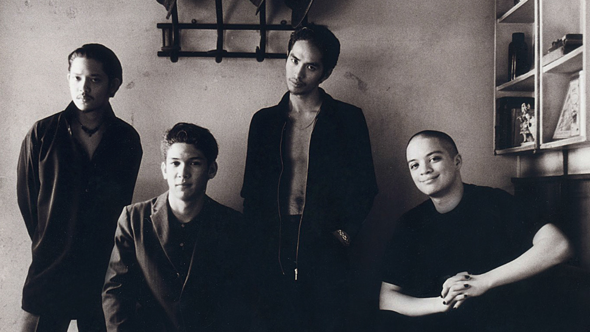

Rivermaya is a Filipino alternative rock band. Formed in 1994, it is one of several bands that spearheaded the 1990s Philippine alternative rock explosion. Rivermaya is currently composed of original members Mark Escueta and Nathan Azarcon, together with the longest-serving guitarist Mike Elgar. Mark Edward Penabella Escueta is a Filipino musician and one of the founding members of the Filipino rock band Rivermaya. Escueta has been the only constant member of Rivermaya since its inception in 1994. Escueta is the eldest of four siblings. He has two younger brothers and one sister. Escueta finished high school at De La Salle Santiago Zobel School. Nathan Peter Hachero Azarcon (born January 29, 1975) is a Filipino musician, nationalist, songwriter, and producer. He is currently the bassist, vocalist, and one of the founding members of the Filipino rock band Rivermaya.  Rico Rene Granados Blanco (born March 17, 1973) is a Filipino singer, songwriter, multi-instrumentalist, record producer, actor, endorser, and entrepreneur. He began his career as one of the founding members and served as the chief songwriter, vocalist, guitarist, and keyboardist of the Filipino rock band Rivermaya from 1994 until 2007, and has been a solo artist since 2008. Blanco's songs and performances gained success and critical acclaim, earning himself a reputation as one of the well-received local music icons in the Philippines. Francisco Gaudencio Lope Belardo Mañalac (born March 21, 1976), popularly known as Bamboo Mañalac or simply by the mononym Bamboo, is a Filipino musician and singer-songwriter. He began his career as the vocalist and original frontman of Rivermaya and later fronted his own band, Bamboo. Bamboo band disbanded in 2011, and Mañalac then pursued a solo career and released his first solo album, "No Water, No Moon."